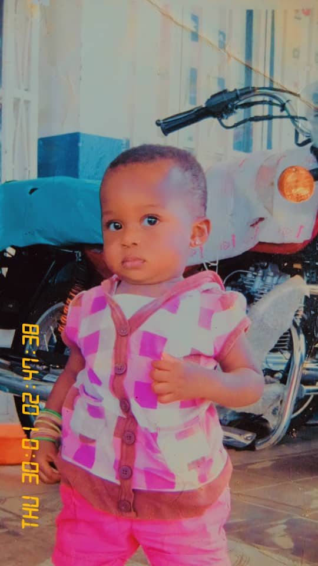
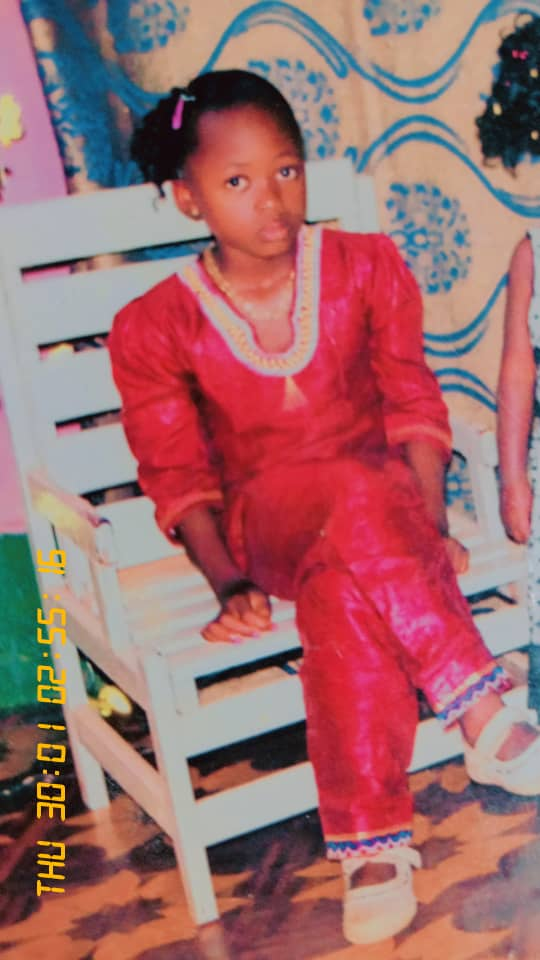

Présentation
Bienvenue sur mon site personnel. Ce site présente mon histoire, Mon parcours et mes aspirations pour l’avenir.

Biographie
Bilonda kabuya angel, né le 11/01/2006 en République Démocratique du Congo, précisément à Lubumbashi.
Niveau académique
Étudiant à l’École Supérieure des Ingénieurs, Promotion préparatoire à l’Université de Lubumbashi (UNILU).

Mes ambitions
Ambitieux et passionné, j’aspire à devenir un ingénieur qualifié En mettant la science et la technologie au service de l’humanité.
Moi aujourd’hui
Un rêve devient réalité lorsqu’il est transformé en objectifs, Nourri par l’action quotidienne, la discipline et la foi en Dieu.